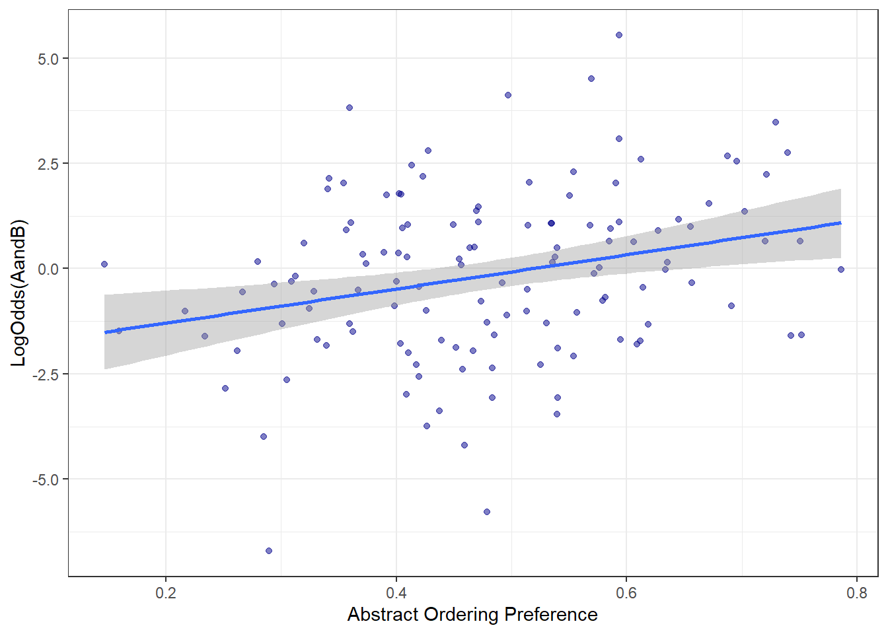
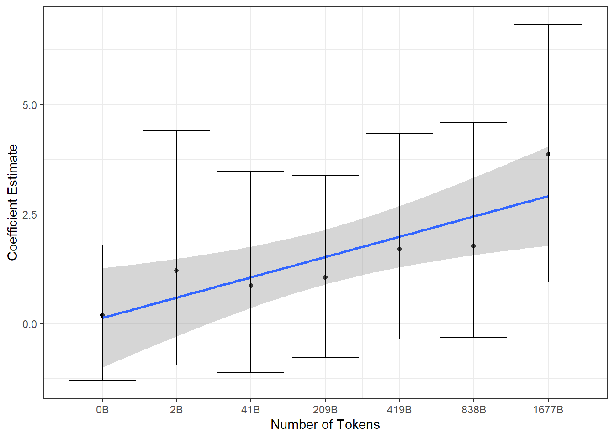
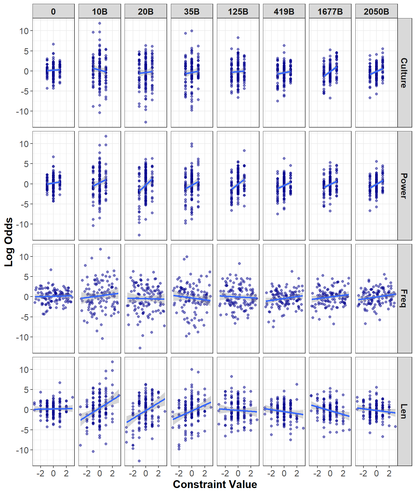

| Estimate | Est.Error | Q2.5 | Q97.5 | |
|---|---|---|---|---|
| Intercept | -1.370 | 0.636 | -2.672 | -0.222 |
| AbsPref | 2.547 | 1.274 | 0.291 | 5.151 |
Emergent Abstract Ordering Preferences in Large Language Models
Introduction
Large language models have stormed the media in the last few years and become a popular topic in the scientific literature. Their historic rise to fame has brought with them many heated debates regarding whether large language models constitute human-like models of language or whether what they are doing is completely different from humans (Bender et al., 2021; Piantadosi, 2023; Piantadosi & Hill, 2022).
Many of these debates have centered around the tradeoff between computation and storage: how much are these models simply reproducing from their training data vs how much of their productions are novel utterances using learned linguistic patterns. On one hand, there is no doubt that large language models store and reproduce large chunks of language. In fact, OpenAI is even being sued by The New York Times for allegedly reproducing entire articles verbatim (The New York Times Company v. Microsoft Corporation, OpenAI, Inc., OpenAI LP, OpenAI GP, LLC, OpenAI, LLC, OpenAI OpCo LLC, OpenAI Global LLC, OAI Corporation, LLC, and OpenAI Holdings, LLC, 2024). This sentiment – that large language models are nothing but glorified copy cats – has been echoed by several other prominent linguists (Bender et al., 2021; Bender & Koller, 2020; c.f., Piantadosi, 2023).
Specifically, proponents of the “LLMs as copy cats” argument have pointed out that large language models are trained on an inconceivably large amount of data. For example, the OLMo models were trained on trillions of tokens (Groeneveld et al., 2024)1. As such, it is extremely difficult to determine whether utterances produced by an LLM are truly novel, or whether they are simply reproduced from their training data. This is further complicated by the fact that training data for LLMs is typically either not publicly available, or so huge that it’s incredibly difficult to work with. On the other hand, it is clear that large language models are learning at least some linguistic patterns. For example, McCoy et al. (2023) demonstrated that Chat GPT-2 is able to generate well-formed novel words as well as well-formed novel syntactic structures, however they found that it still copies extensively.
A similar debate in the field has centered around whether large language models learn any knowledge about the meaning of words. For example, Bender & Koller (2020) have argued that large language models, which are only trained on the form, have no way of learning anything about meaning. They pointed out that large language models do not have the rich information that humans receive, such as the referent of the form. However, Piantadosi & Hill (2022) rebutted this claim by arguing that co-occurrence statistics can be extremely informative about a word’s meaning. For example, they argued that many words, such as “justice”, contain no clear referent and instead have to be learned by humans based on the context that they occur in. It seems plausible that large language models could learn at least some information about the meaning of words in a similar manner.
These debates, however, have been highly theoretical and speculative and very few empirical studies have been done to actually investigate these questions (Lasri et al., 2022; c.f., LeBrun et al., 2022; McCoy et al., 2023). Thus in the present paper we address these debates by taking an in-depth look at large language models’ abilities to learn generalized word order patterns that are contingent on word meanings.
Our specific contributions are as follows: We make a 1-gram, 2-grams, and 3-grams corpus of Dolma (Soldaini et al., 2024) along with the scripts to reproduce it open-access. We also use this corpus to create novel binomials (Noun and Noun compounds, such as cats and dogs) that the OLMo 7B model (Groeneveld et al., 2024) has never seen. We examine whether OLMo 7B learns general patterns for ordering preferences (e.g., preferring the binomial ordering with the shorter word first as in ladies in gentlemen as opposed to gentlemen and ladies) for binomials that it has never seen before. Finally, we demonstrate a timescale of these preferences emerging over training that can be used to generate predictions about human learning.
Abstractions in Large Language Models
The evidence for learned abstractions in large language models is extremely mixed. For example, Haley (2020) demonstrated that many of the BERT models are not able to reliably determine the plurality of novel words. Additionally, Li & Wisniewski (2021) demonstrated that when tasked with producing the correct tense for a word, BERT tends to rely on memorization from its training data as opposed to learning the more general linguistic pattern.
On the other hand, Lasri et al. (2022) demonstrated that BERT can generalize well to novel subject-verb pairs. Specifically, they tested BERT’s performance on novel sentences along with semantically incoherent but syntactically sensible sentences (e.g., colorless green ideas sleep furiously). They found that BERT performs well on items it wasn’t trained on. Additionally, Li et al. (2023) demonstrated that transformers are able to use abstract knowledge to correctly predict subject-verb and object-past participle agreements in French. Similarly, as mentioned earlier, McCoy et al. (2023) examined to what extent GPT-2 was simply copying its training data vs producing novel utterances. They found that while GPT-2 copies extensively, it also produces both novel words as well as novel syntactic structures.
There is also evidence that transformer models can learn abstractions from other domains as well. For example, Tartaglini et al. (2023) examined the ability of a transformer model in a same-different task (i.e., determining if two entities, e.g., two shapes, in an image are the same or different). They found that certain models can reach near perfect accuracy on items they have never seen before. They argued that this demonstrates their abilities to learn abstract representations.
Finally, there’s evidence that inducing abstractions facilitates performance in large language models. For example Zheng et al. (n.d.) used a novel prompting technique to enable LLMs to use abstractions when reasoning. They found that LLMs hallucinate less when they implement abstractions in their reasoning. Similarly, McCoy et al. (n.d.) demonstrated that large language models can use abstractions to learn language more easily, suggesting that inducing abstractions may help reduce the amount of training that large language models require.
Abstractions in Humans
Abstractions have been a part of just about every linguistic theory out there, including both generativist and non-generativist theories. This is for good reason, too: one of the hallmarks of human language learning is the ability to produce novel, never-heard-before utterances. In order to do so, most theories posit that humans leverage their remarkable ability to learn linguistic patterns beyond simple co-occurrence rates (c.f., Ambridge, 2020). For example, when presented a novel noun, children are able to consistently produce the proper plural form of that noun (Berko, 1958). Similarly, children are able to abstract across different contexts to learn a word’s general meaning (Yu & Smith, 2007).
Abstractions are useful because when humans produce a novel utterance that they have never heard before, their novel utterances contain a level of systematicity that allows the interlocutor to understand it with very little difficulty. This is even the case for binomials (e.g., cat and dog), whose order does not particularly affect the meaning of the utterance.
Binomial ordering preferences are well-documented in the literature. Binomials have been a particularly useful test case in the psycholinguistics literature because humans have varying preferences for which noun occurs first in the binomial, despite the ordering having little effect on the meaning. For example, while one could reasonably say computers and monitors or monitors and computers, butter and bread sounds quite unnatural compared to bread and butter. However, none of those have a particularly different meaning.
There have been several studies showing human ordering preferences for binomials are driven, at least in part, by abstract ordering preferences (Morgan & Levy, 2015, 2016a, 2016b, 2024) For example, Morgan & Levy (2016a) demonstrated that humans show ordering preferences for binomials beyond simply preferring the more frequent ordering. In order to demonstrate this, they coded a list of binomials for a variety of semantic constraints, phonological constraints, and metric constraints that affect human ordering preferences for binomials (Benor & Levy, 2006). They found that human ordering preferences were driven by abstract ordering preferences, such as a preference to place short words before longer words, even after accounting for the relative frequency (the proportion of each ordering that a binomial occurs in corpus data). However, humans are also sensitive to the frequency of each ordering (e.g., a preference for bread and butter over butter and bread). In other words, human ordering preferences are driven by both the observed preferences in corpus data (i.e., the number of times they’ve encountered each ordering of the binomial) as well as by abstract ordering preferences (Morgan & Levy, 2016a). Interestingly, more recently Morgan & Levy (2024) also demonstrated abstract ordering preferences exert a constant effect throughout the frequency spectrum. That is, abstract ordering preferences have an effect on human ordering preferences even for high-frequency binomials.
In summary, human ordering preferences for a given binomial cannot be predicted purely from the proportion of occurrences in the alphabetical order (e.g., bread and butter) to the occurrences in nonalphabetical (e.g., butter and bread). This suggests that humans are not simply reproducing their input, but learning abstract ordering preferences from the data.
Present Study
In the present study we examine whether large language models are simply copying their input, or whether they are behaving more similarly to humans and learning abstract linguistics patterns. We use binomials as a test case because human ordering preferences deviate from the observed preferences for them. Further, we use novel binomials that OLMo has never seen before. Therefore any preference the model has cannot be driven by experience with the specific item.
In Experiment 1 we examine whether OLMo’s 7B model (Groeneveld et al., 2024) is sensitive to abstract ordering preferences for novel binomials that the model has never seen before. We also examine the individual constraints that drive abstract ordering preferences in humans, such as the preference for short words before long words, to determine whether OLMo is sensitive to the same constraints in the same way as humans. In Experiment 2, we examine the same questions at different stages of the model’s training in order to determine how these abstract ordering preferences emerge as a function of the training.
Dataset
Dolma
For both experiments, we use the dataset described in this section. In order to examine whether large language models learn preferences above and beyond simply memorizing co-occurrence rates, we created a 1-grams, 2-grams, and 3-grams corpus of Dolma (Soldaini et al., 2024). Specifically, we used Dolma version 1_7 (2.05 trillion tokens), which was used to train OLMo-7B-v1.7 (Groeneveld et al., 2024). Our corpus contains every n-gram (ignoring punctuation and capitalization) in the Dolma corpus, as well as the number of times that n-gram appeared.
We then created a list of binomials and searched the corpus to find a list of binomials that did not occur in the Dolma corpus. We eliminated binomials which occurred more than zero times in either their alphabetical or nonalphabetical orderings. Thus, OLMo has had no experience with either ordering of any of our binomials. We also used the 2-grams corpus to get their bigram frequencies and the 1-grams corpus to get their individual word frequencies.2 Our full list of items comprises 131 binomials.
Abstract Ordering Preferences Corpus
In order to examine whether large language models are learning preferences similar to humans, we calculated the abstract ordering preference value for each of our binomials (following Morgan & Levy, 2016a). Morgan & Levy (2016a) demonstrated that their model’s estimated abstract ordering preference value is a significant predictor of human binomial ordering preferences, even after accounting for the frequency of each ordering. Abstract ordering preferences are calculated from a mix of semantic and phonological properties that human binomial ordering preferences have been shown to be sensitive to (Benor & Levy, 2006). For each of these constraints, a positive value indicates a preference for the alphabeticaly first word to be placed first (a neutral reference order). A negative value indicates a preference for the nonalphabetical word to be placed first. For example, a positive value of Freq indicates that the alphabetical word is more frequent and thus is predicted to be placed first, while a negative value indicates that the nonalphabetical word is more frequent. The constraints are as follows (taken from Morgan & Levy, 2015):
Length: The shorter word should appear first, e.g. abused and neglected.
No Final Stress: The final syllable of the second word should not be stressed, e.g. abused and neglected.
Lapse: Avoid unstressed syllables in a row, e.g. FARMS and HAY-fields vs HAY-fields and FARMS
Frequency: The more frequent word comes first, e.g. bride and groom.
Formal Markedness: The word with more general meaning or broader distribution comes first, e.g. boards and two-by-fours.
Perceptual Markedness: Elements that are more closely connected to the speaker come first. This constraint encompasses Cooper & Ross (1975)‘s (1975) `Me First’ constraint and includes numerous subconstraints, e.g.: animates precede inanimates; concrete words precede abstract words; e.g. deer and trees.
Power: The more powerful or culturally prioritized word comes first, e.g. clergymen and parishioners.
Iconic/scalar sequencing: Elements that exist in sequence should be ordered in sequence, e.g. achieved and maintained.
Cultural Centrality: The more culturally central or common element should come first, e.g. oranges and grapefruits.
Intensity: The element with more intensity appear first, e.g. war and peace.
Experiment 1
In Experiment 1, we examine whether OLMo-7B’s ordering preferences are driven by abstract ordering preferences for novel binomials. In order to do so, we created a list of binomials and searched the Dolma corpus we created to confirm that they did not occur in either alphabetical or nonalphabetical ordering. Both authors then coded the binomials for each of the constraints mentioned earlier and disagreements were resolved by discussion. We then examined whether OLMo-7B shows any preference for one ordering over the other for each binomial. If OLMo has developed any abstract ordering preferences, it should show a systematic preference for one ordering over the other. If it is just reproducing the binomials in ordering based purely off the frequency of the items in its input, we should see only an effect of the frequency constraint (i.e., it should simply show a preference to place the more frequent word first).
Methods
Language Model Predictions
For each model, we calculated the ordering preferences of the alphabetical form (a neutral reference order) for each of our 131 binomials in the dataset. The predicted probability of the alphabetical form was calculated as the product of the model’s predicted probability of each word in the binomial. In order to accurately calculate the probability of the first word in the binomial, each binomial was given the prefix “Next item:”. Thus the probability of the alphabetical form, A and B, is:
\[ \begin{aligned} P_{alphabetical} & = P(A|\text{`Next item:'} )\\ & \times P(and|\text{`Next item: A'})\\ & \times P(B|\text{`Next item: A and'}) \end{aligned} \tag{1}\]
where A is the alphabetically first word in the binomial and B is the other word. Similarly, the probability of the nonalphabetical form, B and A, is:
\[ \begin{aligned} P_{nonalphabetical} & = P(B|\text{`Next item:'})\\ & \times P(and|\text{`Next item: B'})\\ & \times P(A|\text{`Next item: B and'}) \end{aligned} \tag{2}\]
Finally, we calculated the log odds ratio of the probability of the alphabetical form to the probability of the nonalphabetical form to obtain a single numeric value representing the overall ordering preference for a given binomial. A larger positive value represents a preference for the alphabetical form and a larger negative value represents a preference for the nonalphabetical form:
\[ LogOdds(AandB) = log(\frac{P_{alphabetical}}{P_{nonalphabetical}}) \]
Analyses
We present two mixed-effects analyses using Bayesian linear regression models, implemented in brms (Bürkner, 2017) with weak, uninformative priors. For each of our models, the intercept represents the grand mean and the coefficient estimates represent the distance from the grand mean. Bayesian statistics don’t force us into a binary interpretation of significance or non-significance, however we can consider an estimate to be statistically significant if the credible interval for that estimate excludes zero.
For both analyses, the dependent variable is LogOdds(AandB), which was described above. Our dependent variable in the first analysis is the abstract ordering preference for each binomial (AbsPref)3. Our dependent variables in the second analysis are the individual constraints that are used to calculate AbsPref. The model equations are below in Equation 3 and Equation 4. Note that Formal Markedness and Iconicity were dropped from the second model because the constraint values were zero for all of the binomials. Further, our constraints demonstrated a level of co-linearity. Co-linearity can result in poor model estimates and inflated credible intervals. In order to deal with this, we dropped the constraint with the highest variance inflation factor (which turned out to be the lapse constraint). We then performed backward model selection and dropped the predictors whose credible intervals were most centered around zero. This resulted in dropping the no final stress, intense, and percept constraints. We acknowledge that this approach is quite exploratory and thus interpretations at the level of the individual constraint must be taken with a grain of salt.
\[ LogOdds(AandB) \sim AbsPref \tag{3}\]
\[ LogOdds(AandB) \sim Culture + Power + Freq + Len \tag{4}\]
Results
The results for the first analysis are presented below in Table 1. Our results suggest that there is a main-effect of abstract ordering preference for OLMo’s 7B model. A visualization of these results can be found below in Figure 1.

While these results suggest that the large language models’ ordering preferences are sensitive to similar factors as humans, it’s unclear whether this similarity holds on the level of the individual constraints. Thus, in the second analysis we examine which specific constraints the model is sensitive to, and to what extent.4 For this analysis, following Z. Houghton et al. (2024), we also present the percentage of posterior samples greater than zero. The results of this analysis can be found below in Table 2.
| Estimate | Est.Error | Q2.5 | Q97.5 | % Samples > 0 | |
|---|---|---|---|---|---|
| Intercept | -0.132 | 0.163 | -0.451 | 0.185 | 20.750 |
| Culture | 0.414 | 0.254 | -0.078 | 0.916 | 94.945 |
| Power | 0.720 | 0.263 | 0.204 | 1.236 | 99.665 |
| Freq | 0.091 | 0.087 | -0.079 | 0.263 | 85.170 |
| Len | -0.209 | 0.134 | -0.476 | 0.052 | 5.870 |
The model is most sensitive to the Power constraint, however there appears to be a marginal effect of Culture as well, since nearly 95% of the posterior samples are greater than zero despite the credible interval crossing zero. Surprisingly, there also appears to be a negative effect of length with a slight preference to place the longer word first, which is the opposite direction from what we see in humans. Length is often correlated with frequency, since frequent words tend to be shorter. As such, we ran a model without frequency to determine whether the negative effect of length was do to co-linearity with frequency. However, dropping frequency from the model did not affect the effect of length. Further, we also ran a model with only length as the predictor and for that model as well the estimate of length remained negative.
Discussion
The present experiment found that OLMo-7B has learned abstract ordering preferences even for novel binomials that it has never seen before. Further, these ordering preferences aren’t simply based on the individual word frequencies. Specifically, we find a main-effect of abstract ordering preferences on the model’s binomial ordering preferences. Additionally, we find a strong preference to place the more powerful word first, a weak preference to place the more culturally central word first, and a weak preference to place the longer word first.
These results together suggest that the model is learning abstract ordering preferences but these are not identical to humans. For example, while humans also show a preference for placing the more powerful and more culturally central words first, humans also prefer to place the shorter word first (Morgan & Levy, 2015, 2016a). However, we find the opposite finding: large language models prefer to place the longer word first. One explanation for this is a difference in terms of the input between humans and large language models. The length constraint is determined by the number of syllables. Syllables are salient cues in the audio that humans receive during learning [NEED CITATION], but it’s less clear how salient of a cue this is for large language models, which receive sub-word tokens (which vary in their size, from being individual orthographic symbols to being entire words5).
Experiment 2
In Experiment 1 we demonstrated that large language models are not simply copying their training, but are learning some abstract ordering preferences from their input. However, OLMo makes public various checkpoints during the model’s training, thus allowing us the opportunity to examine how these preferences arise as a function of the training. Thus, in Experiment 2 we examine the evolution of these learned abstract ordering preferences as the model learns over time.
Methods
Language Model Predictions
Our language model predictions in Experiment 2 were obtained using the same procedure as in Experiment 1. However, instead of calculating these metrics only for the main model, we calculated them at various checkpoints. These checkpoints are listed below, in terms of the steps as well as the number of billions of tokens the model had been trained on at that checkpoint:
Step 0, 0B Tokens
Step 1000, 2B Tokens
Step 10000, 41B Tokens
Step 50000, 209B Tokens
Step 100000, 419B Tokens
Step 200000, 838B Tokens
Step 400000, Tokens 1677B
Analysis
We ran the same two analyses as in Experiment 1, however, we ran these analyses for the each of the checkpoints listed above.
Results
Our model estimates for the effect of AbsPref on LogOdds(AandB) at each checkpoint are presented below in Table 3 and visualized in Figure 2.
| Number of Tokens | Estimate | Est.Error | Q2.5 | Q97.5 |
|---|---|---|---|---|
| 0B | 0.189 | 0.789 | -1.303 | 1.787 |
| 2B | 1.210 | 1.346 | -0.944 | 4.404 |
| 41B | 0.869 | 1.167 | -1.119 | 3.472 |
| 209B | 1.051 | 1.040 | -0.776 | 3.375 |
| 419B | 1.700 | 1.216 | -0.355 | 4.326 |
| 838B | 1.770 | 1.267 | -0.320 | 4.585 |
| 1677B | 3.858 | 1.516 | 0.948 | 6.825 |
The model results are visualized below in Figure 2.

Our results demonstrate that it takes quite a large number of tokens for the model to learn the abstract ordering preferences. As Figure 2 demonstrates, the effect of abstract ordering preference isn’t convincing until the model has experienced 419 billion tokens. However, it does appear that the model develops a slight preference quite rapidly. For example, by 2 billion tokens there appears to be a very slight (though unconvincing) effect of abstract ordering preferences on the ordering of binomials.
Similar to Experiment 1, in our second analysis we present a breakdown of the effects of each individual constraint. In this analysis, however, we demonstrate the effect of each constraint at each checkpoint. The full table results can be found in the Section 8, but we present a visualization below in Figure 3.

Interestingly, it appears that early on the model already shows evidence of learning human-like preferences. For example, by 10 billion tokens, the model has learned to place more powerful words first and shorter words first. However, the model seems slower to learn to place more culturally central words first. Further, as it receives more training the effect of length undergoes a reversal in direction.
Discussion
Our results demonstrate that OLMo learns human-like ordering preferences early on for most of the constraints, but takes longer to learn human-like ordering preferences for the culture constraint. Further, the model is human-like in its predictions for length early on, but as it receives more training data it learns the opposite length prediction. It is unclear what exactly is causing this reversal, but as we suggested earlier it may be a function of the tokenization differences between human input and large language models’ input. We look forward to examining this question in more depth in future studies.
Our results can also be interpreted as predictions for human data. For example, it takes the model longer to learn the Culture constraint than the other constraints. Is the same true for humans?
Finally, previous results suggest that for non-novel binomials that OLMo has experienced before, it relies almost exclusively on its experience with it in its training data (i.e., its ordering preference is primarily driven by the proportion of occurrences in alphabetical to nonalphabetical ordering) and does not use abstract ordering preferences at all (Z. N. Houghton et al., 2025). Our results thus suggest that while large language models are able to learn abstract ordering preferences, in cases where they’ve seen the binomial they are able to rely on their experience more than a human can.
Conclusion
In the present study, we examined the ordering preferences in OLMo 7B’s main model as well as the model at various stages in learning. We found that the main model shows human-like ordering preferences, with the exception of a preference for longer words before shorter words. Further, we show that while the effect of abstract ordering preference on a whole takes a great deal of time (over 400 billion tokens to be convincing), the model seems to pick up on individual constraints quite early on, and initially even learns the correct direction of the length constraint.
Our results suggest that large language models are not simply copying their input, but are learning interesting, human-like phenomena from their training. However, they are not learning identically to humans, as demonstrated by the opposite direction of the length preference. This is not surprising given the differences in tokenization methods. Further, while humans rely on abstract preferences even for binomials that they have encountered before, large language models only rely on abstract ordering preferences for items that they have not encountered at all.
Limitations
The main limitation is the number of models tested. We only tested one model in this study, so it’s possible that other large language models may demonstrate different ordering preferences. However, we believe that the advantages of demonstrating an in-depth analysis of a single model outweigh a more broad analysis of several models, especially given the lack of easily available open access training data, which is crucial to guaranteeing that the model has not encountered our items before.
Additionally, we only test one construction in this paper (binomials). While it is possible that abstract ordering preferences for binomials are different than other constructions, binomials are well understood in the human linguistics literature thus making them a good test case for our analyses.
References
Ambridge, B. (2020). Against stored abstractions: A radical exemplar model of language acquisition. First Language, 40(5-6), 509–559. https://doi.org/10.1177/0142723719869731
Bender, E. M., Gebru, T., McMillan-Major, A., & Shmitchell, S. (2021). FAccT ’21: 2021 ACM Conference on Fairness, Accountability, and Transparency. 610–623. https://doi.org/10.1145/3442188.3445922
Bender, E. M., & Koller, A. (2020). Climbing towards NLU: On meaning, form, and understanding in the age of data. Proceedings of the 58th Annual Meeting of the Association for Computational Linguistics, 5185–5198.
Benor, S. B., & Levy, R. (2006). The chicken or the egg? A probabilistic analysis of english binomials. Language, 82(2), 233–278. https://doi.org/10.1353/lan.2006.0077
Berko, J. (1958). The Child’s Learning of English Morphology. WORD, 14(2-3), 150–177. https://doi.org/10.1080/00437956.1958.11659661
Bürkner, P.-C. (2017). Brms: An r package for bayesian multilevel models using stan. Journal of Statistical Software, 80, 128. https://www.jstatsoft.org/article/view/v080i01
Cooper, W. E., & Ross, J. R. (1975). World order. Papers from the Parasession on Functionalism, 11, 63–111.
Groeneveld, D., Beltagy, I., Walsh, P., Bhagia, A., Kinney, R., Tafjord, O., Jha, A. H., Ivison, H., Magnusson, I., Wang, Y., et al. (2024). Olmo: Accelerating the science of language models. arXiv Preprint arXiv:2402.00838.
Haley, C. (2020). This is a BERT. Now there are several of them. Can they generalize to novel words? Proceedings of the Third BlackboxNLP Workshop on Analyzing and Interpreting Neural Networks for NLP, 333–341.
Houghton, Z. N., Sagae, K., & Morgan, E. (2025). The role of abstract representations and observed preferences in the ordering of binomials in large language models. University of California, Davis.
Houghton, Z., Kato, M., Baese-Berk, M., & Vaughn, C. (2024). Task-dependent consequences of disfluency in perception of native and non-native speech. Applied Psycholinguistics, 1–17. https://doi.org/10.1017/S0142716423000486
Lasri, K., Seminck, O., Lenci, A., & Poibeau, T. (2022). Subject verb agreement error patterns in meaningless sentences: Humans vs. BERT. arXiv Preprint arXiv:2209.10538.
LeBrun, B., Sordoni, A., & O’Donnell, T. J. (2022). Evaluating distributional distortion in neural language modeling. arXiv Preprint arXiv:2203.12788.
Levy, R., Fedorenko, E., Breen, M., & Gibson, E. (2012). The processing of extraposed structures in english. Cognition, 122(1), 12–36. https://doi.org/10.1016/j.cognition.2011.07.012
Li, B., & Wisniewski, G. (2021). Are neural networks extracting linguistic properties or memorizing training data? An observation with a multilingual probe for predicting tense. https://shs.hal.science/halshs-03197072/
Li, B., Wisniewski, G., & Crabbé, B. (2023). Assessing the capacity of transformer to abstract syntactic representations: A contrastive analysis based on long-distance agreement. Transactions of the Association for Computational Linguistics, 11, 18–33. https://doi.org/10.1162/tacl_a_00531
McCoy, R. T., Grant, E., Smolensky, P., Griffiths, T. L., & Linzen, T. (n.d.). Universal linguistic inductive biases via meta-learning. https://doi.org/10.48550/arXiv.2006.16324
McCoy, R. T., Smolensky, P., Linzen, T., Gao, J., & Celikyilmaz, A. (2023). How much do language models copy from their training data? Evaluating linguistic novelty in text generation using raven. Transactions of the Association for Computational Linguistics, 11, 652–670.
Morgan, E., & Levy, R. (2015). Modeling idiosyncratic preferences : How generative knowledge and expression frequency jointly determine language structure. 1649–1654.
Morgan, E., & Levy, R. (2016a). Abstract knowledge versus direct experience in processing of binomial expressions. Cognition, 157, 384–402. https://doi.org/10.1016/j.cognition.2016.09.011
Morgan, E., & Levy, R. (2016b). Frequency-dependent regularization in iterated learning. The Evolution of Language: Proceedings of the 11th International Conference.
Morgan, E., & Levy, R. (2024). Productive knowledge and item-specific knowledge trade off as a function of frequency in multiword expression processing. Language, 100(4), e195–e224. https://muse.jhu.edu/pub/24/article/947046
Piantadosi, S. T. (2023). Modern language models refute chomsky’s approach to language. From Fieldwork to Linguistic Theory: A Tribute to Dan Everett, 353–414.
Piantadosi, S. T., & Hill, F. (2022). Meaning without reference in large language models. arXiv Preprint arXiv:2208.02957.
Soldaini, L., Kinney, R., Bhagia, A., Schwenk, D., Atkinson, D., Authur, R., Bogin, B., Chandu, K., Dumas, J., Elazar, Y., et al. (2024). Dolma: An open corpus of three trillion tokens for language model pretraining research. arXiv Preprint arXiv:2402.00159.
Tartaglini, A. R., Feucht, S., Lepori, M. A., Vong, W. K., Lovering, C., Lake, B. M., & Pavlick, E. (2023). Deep neural networks can learn generalizable same-different visual relations. arXiv Preprint arXiv:2310.09612.
The New York Times Company v. Microsoft Corporation, OpenAI, Inc., OpenAI LP, OpenAI GP, LLC, OpenAI, LLC, OpenAI OpCo LLC, OpenAI Global LLC, OAI Corporation, LLC, and OpenAI Holdings, LLC. (2024). Civil Action No. 1:23-cv-11195-SHS, United States District Court, Southern District of New York, May 31, 2024.
Yu, C., & Smith, L. B. (2007). Rapid word learning under uncertainty via cross-situational statistics. Psychological Science, 18(5), 414–420.
Zheng, H. S., Mishra, S., Chen, X., Cheng, H.-T., Chi, E. H., Le, Q. V., & Zhou, D. (n.d.). Take a step back: Evoking reasoning via abstraction in large language models. https://doi.org/10.48550/arXiv.2310.06117
Appendices
Full List of Stimuli
Below is a table of our list of binomials as well as the individual constraint values for each.
| Word1 | Word2 | Form | Percept | Culture | Power | Intense | Icon | Freq | Len | Lapse | Final Stress | AbsPref |
|---|---|---|---|---|---|---|---|---|---|---|---|---|
| kiwis | wolverines | 0 | 0 | 0 | -1 | -1 | 0 | -0.291 | 1 | -1 | -1 | 0.427 |
| kiwis | narwhals | 0 | 1 | 0 | -1 | -1 | 0 | 2.715 | 0 | -1 | -1 | 0.515 |
| kiwis | ocelots | 0 | 0 | 0 | -1 | 0 | 0 | 2.737 | 0 | -1 | -1 | 0.458 |
| ibex | kiwis | 0 | 0 | 0 | 1 | 0 | 0 | -1.171 | 0 | 1 | 0 | 0.497 |
| harpies | kiwis | 0 | -1 | 0 | 1 | 1 | 0 | -1.948 | 0 | 0 | 0 | 0.471 |
| axolotls | wolverines | 0 | -1 | 0 | -1 | 0 | 0 | -2.689 | -1 | -1 | -1 | 0.262 |
| axolotls | ibex | 0 | -1 | 0 | -1 | 0 | 0 | -1.228 | -2 | -1 | 0 | 0.331 |
| axolotls | harpies | 0 | 1 | 0 | -1 | -1 | 0 | -0.450 | -2 | 0 | 0 | 0.413 |
| axolotls | keas | 0 | 0 | 1 | -1 | 0 | 0 | 1.052 | -3 | -1 | 1 | 0.591 |
| axolotls | bonobos | 0 | -1 | 0 | -1 | 0 | 0 | -0.895 | -1 | 0 | 0 | 0.328 |
| axolotls | wombats | 0 | -1 | 0 | -1 | 0 | 0 | -0.655 | -2 | -1 | -1 | 0.266 |
| axolotls | lions | 0 | -1 | -1 | -1 | -1 | 0 | -5.114 | -2 | 0 | 0 | 0.159 |
| ocelots | platypuses | 0 | 1 | -1 | 1 | 0 | 0 | 0.665 | 1 | 3 | 1 | 0.525 |
| ibex | platypuses | 0 | 1 | 0 | 1 | 0 | 0 | 2.232 | 2 | 3 | 1 | 0.691 |
| harpies | platypuses | 0 | 0 | 0 | 1 | 1 | 0 | 1.454 | 2 | 2 | 0 | 0.585 |
| keas | platypuses | 0 | 0 | -1 | 0 | 0 | 0 | -0.048 | 3 | 3 | 1 | 0.459 |
| bonobos | platypuses | 0 | 1 | 0 | 1 | 0 | 0 | 1.898 | 1 | 2 | 0 | 0.612 |
| harpies | wolverines | 0 | -1 | 0 | 0 | 0 | 0 | -2.239 | 1 | -1 | 1 | 0.571 |
| keas | wolverines | 0 | -1 | -1 | -1 | 0 | 0 | -3.741 | 2 | 0 | 0 | 0.285 |
| bonobos | wolverines | 0 | 0 | 0 | 0 | 0 | 0 | -1.795 | 0 | -1 | -1 | 0.426 |
| capybaras | ibex | 0 | 0 | 0 | 0 | 0 | 0 | -1.659 | -2 | -1 | -1 | 0.356 |
| capybaras | harpies | 0 | 1 | 0 | -1 | -1 | 0 | -0.882 | -2 | 0 | 0 | 0.404 |
| capybaras | keas | 0 | 1 | 1 | 1 | 0 | 0 | 0.621 | -3 | -1 | -1 | 0.593 |
| ibex | narwhals | 0 | 1 | 0 | -1 | 0 | 0 | 1.544 | 0 | 0 | 0 | 0.536 |
| harpies | narwhals | 0 | -1 | 0 | 0 | 1 | 0 | 0.767 | 0 | -1 | -1 | 0.423 |
| keas | narwhals | 0 | 0 | -1 | -1 | 0 | 0 | -0.736 | 1 | 0 | 0 | 0.362 |
| ibex | ocelots | 0 | 0 | 0 | 0 | 0 | 0 | 1.566 | 1 | 0 | 0 | 0.576 |
| keas | ocelots | 0 | -1 | -1 | -1 | 0 | 0 | -0.714 | 2 | 0 | 0 | 0.340 |
| bonobos | ocelots | 0 | 0 | 1 | 0 | 0 | 0 | 1.233 | 0 | -1 | -1 | 0.594 |
| harpies | ibex | 0 | -1 | 0 | 0 | 1 | 0 | -0.777 | 0 | -1 | -1 | 0.391 |
| ibex | keas | 0 | 1 | 1 | 1 | 0 | 0 | 2.280 | -1 | 0 | 0 | 0.729 |
| bonobos | ibex | 0 | 0 | 0 | 0 | 0 | 0 | -0.333 | -1 | -1 | -1 | 0.419 |
| ibex | koalas | 0 | 0 | -1 | 0 | 0 | 0 | -0.433 | 1 | 1 | 1 | 0.471 |
| ibex | sloths | 0 | 0 | -1 | 1 | 0 | 0 | -0.035 | -1 | 0 | 0 | 0.427 |
| aardvarks | ibex | 0 | 0 | 1 | 0 | 0 | 0 | -1.945 | 0 | 0 | 0 | 0.568 |
| harpies | keas | 0 | -1 | 1 | 1 | 1 | 0 | 1.503 | -1 | -1 | -1 | 0.569 |
| bonobos | harpies | 0 | 1 | 0 | -1 | -1 | 0 | 0.444 | -1 | 0 | 0 | 0.470 |
| harpies | koalas | 0 | -1 | -1 | 0 | 1 | 0 | -1.210 | 1 | 0 | 0 | 0.359 |
| harpies | wombats | 0 | -1 | 0 | 1 | 1 | 0 | -0.204 | 0 | -1 | -1 | 0.467 |
| aardvarks | harpies | 0 | 1 | 0 | 0 | -1 | 0 | -1.167 | 0 | 1 | 1 | 0.579 |
| bonobos | keas | 0 | 1 | 1 | 1 | 0 | 0 | 1.947 | -2 | -1 | -1 | 0.656 |
| keas | koalas | 0 | -1 | -1 | -1 | 0 | 0 | -2.712 | 2 | 1 | 1 | 0.339 |
| keas | sloths | 0 | -1 | -1 | 0 | 0 | 0 | -2.315 | 0 | 0 | 0 | 0.301 |
| keas | wombats | 0 | -1 | -1 | -1 | 0 | 0 | -1.707 | 1 | 0 | 0 | 0.289 |
| keas | lions | 0 | -1 | -1 | -1 | -1 | 0 | -6.166 | 0 | 1 | 1 | 0.217 |
| aardvarks | keas | 0 | 1 | 1 | 1 | 0 | 0 | 0.335 | -1 | 0 | 0 | 0.695 |
| bonobos | wombats | 0 | 0 | 0 | 1 | 0 | 0 | 0.240 | -1 | -1 | -1 | 0.496 |
| aardvarks | bonobos | 0 | 0 | 0 | 0 | 0 | 0 | -1.611 | 1 | 1 | 1 | 0.551 |
| ocarinas | vibraphones | 0 | 0 | 1 | 0 | 0 | 0 | 0.461 | -1 | -1 | -1 | 0.540 |
| cymbals | ocarinas | 0 | 0 | 1 | 1 | 0 | 0 | 3.485 | 2 | 0 | 0 | 0.786 |
| clarinets | ocarinas | 0 | 0 | 1 | 1 | 0 | 0 | 2.245 | 0 | 1 | 1 | 0.742 |
| cellos | ocarinas | 0 | 0 | 1 | 0 | 0 | 0 | 2.344 | 2 | 0 | 0 | 0.720 |
| didgeridoos | vibraphones | 0 | 0 | 0 | 0 | 0 | 0 | 0.533 | -1 | 0 | 0 | 0.479 |
| lutes | marimbas | 0 | 0 | 0 | 0 | 0 | 0 | 1.225 | 2 | 1 | 1 | 0.645 |
| kalimbas | lutes | 0 | 0 | 0 | 0 | 0 | 0 | -2.407 | -2 | -1 | -1 | 0.342 |
| clarinets | kalimbas | 0 | 0 | 1 | 1 | 0 | 0 | 2.827 | 0 | 1 | 1 | 0.752 |
| kalimbas | trumpets | 0 | 0 | -1 | -1 | 0 | 0 | -4.437 | -1 | 0 | 0 | 0.234 |
| cellos | kalimbas | 0 | 0 | 1 | 1 | 0 | 0 | 2.926 | 1 | 0 | 0 | 0.751 |
| kalimbas | saxophones | 0 | 0 | -1 | -1 | 0 | 0 | -3.124 | 0 | -1 | -1 | 0.252 |
| lutes | saxophones | 0 | 0 | -1 | -1 | 0 | 0 | -0.717 | 2 | 0 | 0 | 0.398 |
| casserole | eagle | 0 | -1 | 0 | 0 | -1 | 0 | -1.526 | -1 | 1 | 1 | 0.410 |
| kite | linguist | 0 | -1 | 1 | 0 | 0 | 0 | 1.602 | 1 | 1 | 1 | 0.656 |
| algorithm | perfume | 0 | -1 | -1 | 0 | 0 | 0 | 1.992 | -2 | -1 | -1 | 0.280 |
| forest | screwdriver | 0 | 0 | 0 | 0 | 0 | 0 | 3.294 | 1 | 0 | 0 | 0.612 |
| slipper | volcano | 0 | 0 | 1 | -1 | -1 | 0 | -1.806 | 1 | 0 | 0 | 0.540 |
| harmonica | microscope | 0 | 0 | 0 | 0 | 0 | 0 | -1.745 | -1 | -2 | -1 | 0.437 |
| cookbook | zenith | 0 | 1 | 1 | 0 | 0 | 0 | 1.136 | 0 | 1 | 1 | 0.722 |
| hammock | hydrogen | 0 | 1 | -1 | 0 | 0 | 0 | -2.060 | 1 | 1 | 0 | 0.410 |
| neuron | toaster | 0 | -1 | -1 | 0 | 0 | 0 | 0.383 | 0 | 1 | 0 | 0.309 |
| marshmallow | telescope | 0 | 0 | 0 | 0 | 0 | 0 | -1.166 | 0 | -1 | -1 | 0.439 |
| casserole | optics | 0 | 1 | 0 | 0 | 0 | 0 | -0.665 | -1 | 1 | 1 | 0.557 |
| encyclopedia | comet | 0 | 1 | 0 | -1 | 0 | 0 | 0.947 | -4 | -1 | 0 | 0.420 |
| nimbus | waffle | 0 | -1 | -1 | 0 | 0 | 0 | -1.680 | 0 | 0 | 0 | 0.312 |
| photon | pumpkin | 0 | -1 | -1 | 0 | 0 | 0 | -0.793 | 0 | 1 | 1 | 0.367 |
| lantern | syntax | 0 | 1 | 1 | 0 | 0 | 0 | -0.941 | 0 | -1 | -1 | 0.609 |
| echo | vineyard | 0 | -1 | 0 | 0 | 0 | 0 | 1.884 | 0 | 0 | 0 | 0.484 |
| nebula | snowman | 0 | -1 | -1 | 0 | 0 | 0 | 0.182 | -1 | -2 | -1 | 0.320 |
| botany | teapot | 0 | -1 | -1 | 0 | 0 | 0 | 0.438 | -1 | -2 | -1 | 0.325 |
| chisel | kaleidoscope | 0 | 0 | 0 | 1 | 0 | 0 | 0.139 | 2 | -1 | -1 | 0.606 |
| lava | teacup | 0 | -1 | -1 | 1 | 0 | 0 | 1.969 | 0 | -1 | -1 | 0.405 |
| entropy | orchard | 0 | -1 | -1 | 0 | 0 | 0 | 0.370 | -1 | -1 | 0 | 0.361 |
| axolotl | vineyard | 0 | 1 | 0 | 0 | 0 | 0 | -3.510 | -2 | 0 | 0 | 0.417 |
| clockwork | meadow | 0 | -1 | 0 | 0 | 0 | 0 | -0.987 | 0 | 1 | 1 | 0.464 |
| algebra | telescope | 0 | -1 | 0 | 0 | 0 | 0 | 8.751 | 0 | -2 | -1 | 0.634 |
| arcade | topaz | 0 | 0 | 0 | 0 | 0 | 0 | 2.276 | 0 | 0 | 0 | 0.554 |
| asteroid | compass | 0 | -1 | 0 | 1 | 0 | 0 | -0.862 | -1 | 0 | 0 | 0.452 |
| bicycle | nebula | 0 | 1 | 1 | 0 | 0 | 0 | 1.991 | 0 | 0 | 0 | 0.703 |
| bungalow | entropy | 0 | 1 | 0 | 0 | 0 | 0 | -1.198 | 0 | 2 | 1 | 0.535 |
| carnation | gnome | 0 | 0 | 0 | 0 | 0 | 0 | -1.769 | -2 | -1 | -1 | 0.354 |
| cinnamon | harmonica | 0 | 0 | 1 | 0 | 0 | 0 | 2.300 | 1 | 0 | 0 | 0.688 |
| coral | syntax | 0 | 1 | 1 | 0 | 0 | 0 | -0.020 | 0 | -1 | -1 | 0.627 |
| dandelion | pendulum | 0 | 0 | 0 | 0 | 0 | 0 | -0.533 | -1 | 1 | 0 | 0.409 |
| delirium | telescope | 0 | -1 | -1 | 0 | 1 | 0 | -1.442 | -1 | -2 | -1 | 0.294 |
| anchors | sandstorms | 0 | 1 | 0 | 0 | -1 | 0 | 3.416 | 0 | -1 | -1 | 0.593 |
| scissors | volcanoes | 0 | 0 | 1 | -1 | 0 | 0 | 0.577 | 1 | 0 | 0 | 0.594 |
| equations | lanterns | 0 | -1 | 0 | 0 | 0 | 0 | 2.297 | -1 | 0 | 0 | 0.454 |
| satellites | tulips | 0 | -1 | 0 | 0 | 0 | 0 | 1.493 | -1 | 1 | 1 | 0.479 |
| compasses | hedgehogs | 0 | -1 | 0 | 0 | 0 | 0 | -0.612 | -1 | -2 | -1 | 0.400 |
| comets | neckties | 0 | -1 | 0 | 1 | 0 | 0 | 2.294 | 0 | -1 | -1 | 0.516 |
| castles | headphones | 0 | 0 | -1 | 1 | 0 | 0 | -1.098 | 0 | -1 | -1 | 0.402 |
| paperclips | pyramids | 0 | 0 | 1 | -1 | 0 | 0 | -2.884 | 0 | 0 | 0 | 0.483 |
| constellations | kettles | 0 | -1 | 0 | 0 | 0 | 0 | 0.938 | -2 | 0 | 0 | 0.389 |
| kaleidoscopes | whales | 0 | -1 | -1 | -1 | 0 | 0 | -4.654 | -3 | 0 | 0 | 0.147 |
| meadows | pianos | 0 | -1 | -1 | 0 | 0 | 0 | 1.147 | 1 | 0 | 0 | 0.403 |
| magnets | zebras | 0 | -1 | 1 | 0 | 0 | 0 | 1.821 | 0 | 0 | 0 | 0.586 |
| parrots | submarines | 0 | 1 | 0 | -1 | 0 | 0 | -0.346 | 1 | -1 | -1 | 0.492 |
| crayons | jungles | 0 | 1 | 1 | 0 | 0 | 0 | 0.286 | 0 | 0 | 0 | 0.671 |
| harbor | teapot | 0 | -1 | 0 | 0 | 0 | 0 | 2.561 | 0 | -1 | -1 | 0.457 |
| notebook | quicksand | 0 | 0 | 1 | -1 | 0 | 0 | 3.309 | 0 | 0 | 0 | 0.614 |
| glacier | lantern | 0 | -1 | 0 | 0 | 0 | 0 | 0.285 | 0 | 0 | 0 | 0.450 |
| microscope | puddle | 0 | 0 | 0 | 0 | 0 | 0 | 1.361 | -1 | 1 | 1 | 0.538 |
| compass | swan | 0 | -1 | 0 | 0 | 0 | 0 | 0.199 | -1 | -1 | -1 | 0.371 |
| bonsai | cathedral | 0 | 1 | 0 | -1 | 0 | 0 | -2.004 | 1 | 1 | 1 | 0.540 |
| honeycomb | violin | 0 | 0 | -1 | 0 | 0 | 0 | -1.398 | 0 | 0 | 0 | 0.374 |
| sailboat | stadium | 0 | 0 | 0 | 0 | 0 | 0 | -3.213 | 1 | 2 | 1 | 0.468 |
| acorns | skyscrapers | 0 | 1 | 0 | 0 | 0 | 0 | -0.399 | 1 | 1 | 1 | 0.635 |
| bell | trellis | 0 | 0 | 1 | 0 | 0 | 0 | 3.327 | 1 | 1 | 1 | 0.740 |
| inkwell | kite | 0 | 0 | -1 | 0 | 0 | 0 | -3.215 | -1 | 0 | 0 | 0.305 |
| foxglove | trombone | 0 | 0 | -1 | 0 | 0 | 0 | -1.888 | 0 | 1 | 1 | 0.403 |
| carousel | quill | 0 | 0 | 1 | 0 | 0 | 0 | 0.942 | -2 | 0 | 0 | 0.554 |
| lighthouse | onion | 0 | -1 | -1 | 0 | 0 | 0 | -1.153 | 0 | 1 | 1 | 0.359 |
| cactus | chessboard | 0 | 0 | 0 | 0 | 1 | 0 | 2.084 | 0 | -1 | -1 | 0.513 |
| gallery | raindrop | 0 | 0 | 0 | 0 | 0 | 0 | 5.058 | -1 | -2 | -1 | 0.582 |
| cricket | plow | 0 | 1 | 0 | -1 | 0 | 0 | 2.370 | -1 | -1 | -1 | 0.474 |
| gingerbread | fresco | 0 | 0 | 1 | 0 | 0 | 0 | 0.345 | -1 | 1 | 1 | 0.619 |
| cello | sunflower | 0 | 0 | 0 | 0 | 0 | 0 | -0.417 | 1 | 0 | 0 | 0.535 |
| archway | quilt | 0 | 0 | 0 | 0 | 0 | 0 | -2.775 | -1 | 0 | 0 | 0.409 |
| compass | haystack | 0 | 0 | 0 | 0 | 0 | 0 | 2.338 | 0 | -1 | -1 | 0.514 |
| beacon | millipede | 0 | -1 | 0 | 0 | 1 | 0 | 4.030 | 1 | -1 | -1 | 0.531 |
| parchment | windmill | 0 | 0 | 0 | 0 | 0 | 0 | 0.990 | 0 | -1 | -1 | 0.485 |
| candlestick | meadow | 0 | 1 | 0 | 0 | 0 | 0 | -1.463 | -1 | 1 | 1 | 0.540 |
Individual Constraints at Each Checkpoint
Below is a table of the fixed-effects for each individual constraint at each checkpoint.
| Parameter | num_tokens | Estimate | Est.Error | Q2.5 | Q97.5 |
|---|---|---|---|---|---|
| Intercept | 0B | 0.223 | 0.159 | -0.087 | 0.539 |
| Culture | 0B | 0.149 | 0.244 | -0.327 | 0.623 |
| Power | 0B | 0.286 | 0.249 | -0.207 | 0.777 |
| Freq | 0B | -0.070 | 0.082 | -0.232 | 0.091 |
| Len | 0B | 0.030 | 0.127 | -0.220 | 0.278 |
| Intercept | 2B | -0.027 | 0.256 | -0.529 | 0.478 |
| Culture | 2B | -0.399 | 0.390 | -1.161 | 0.361 |
| Power | 2B | 0.531 | 0.404 | -0.250 | 1.334 |
| Freq | 2B | 0.258 | 0.135 | -0.008 | 0.524 |
| Len | 2B | 0.492 | 0.212 | 0.076 | 0.909 |
| Intercept | 41B | 0.179 | 0.229 | -0.268 | 0.628 |
| Culture | 41B | -0.377 | 0.347 | -1.065 | 0.305 |
| Power | 41B | 1.290 | 0.373 | 0.568 | 2.037 |
| Freq | 41B | -0.035 | 0.121 | -0.274 | 0.202 |
| Len | 41B | 0.807 | 0.188 | 0.438 | 1.179 |
| Intercept | 209B | 0.176 | 0.182 | -0.186 | 0.537 |
| Culture | 209B | 0.290 | 0.283 | -0.268 | 0.847 |
| Power | 209B | 0.760 | 0.289 | 0.194 | 1.327 |
| Freq | 209B | -0.056 | 0.096 | -0.244 | 0.132 |
| Len | 209B | -0.063 | 0.150 | -0.358 | 0.234 |
| Intercept | 419B | -0.458 | 0.183 | -0.816 | -0.099 |
| Culture | 419B | -0.125 | 0.282 | -0.679 | 0.437 |
| Power | 419B | 0.508 | 0.289 | -0.056 | 1.073 |
| Freq | 419B | 0.240 | 0.096 | 0.053 | 0.431 |
| Len | 419B | -0.298 | 0.150 | -0.591 | -0.005 |
| Intercept | 838B | -0.022 | 0.184 | -0.381 | 0.335 |
| Culture | 838B | -0.111 | 0.284 | -0.661 | 0.446 |
| Power | 838B | 0.865 | 0.297 | 0.283 | 1.456 |
| Freq | 838B | 0.127 | 0.099 | -0.068 | 0.319 |
| Len | 838B | 0.247 | 0.154 | -0.055 | 0.552 |
| Intercept | 1677B | -0.181 | 0.176 | -0.527 | 0.159 |
| Culture | 1677B | 0.861 | 0.273 | 0.326 | 1.394 |
| Power | 1677B | 0.562 | 0.275 | 0.031 | 1.108 |
| Freq | 1677B | 0.052 | 0.091 | -0.125 | 0.230 |
| Len | 1677B | -0.431 | 0.142 | -0.708 | -0.156 |
Footnotes
This is magnitudes larger than the 350 million words that the average college-aged speaker has seen in their lifetime (Levy et al., 2012).↩︎
Our code and datasets for the analyses run in this paper can also be found at: github.com/[anonymous].↩︎
We also ran a model examining whether the ordering preferences were driven by the bigram probabilities of the binomial, however surprisingly bigram probabilities turned out to be a poor predictor of ordering preferences.↩︎
It’s also helpful to consider how many of our binomials the constraint even applied to (i.e., how many binomials were the constraints non-zero). For the Culture constraint, 62 of our 131 binomials had a non-zero value. For the Power constraint, 54 did, for the Frequency constraint, all 131 binomials did, and for the Len constraint, 85 did.↩︎
For example, both ictionary and region are individual tokens in OpenAI’s models (https://gist.github.com/s-macke/ae83f6afb89794350f8d9a1ad8a09193).↩︎